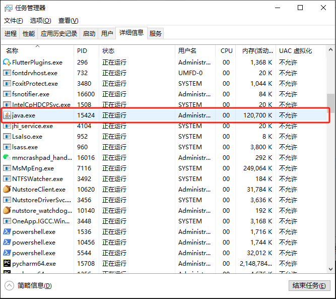

问题简述
需求是通过Python执行命令java -java springboot-demo.jar
于是，我使用subprocess.Popen()来启停。但是我发现在关闭子进程后，java进程并没有正确关闭。
这是由于上面的方法实际原理是另外开启一个cmd命令来运行java -jar命令，后面用popen.terminate()也只能关闭cmd的命令，cmd命令被kill掉后，java进程由系统来托管，从而导致java进程并没有正确关闭。
Bug复现
执行代码：
import subprocess
if __name__ == '__main__':
t = subprocess.Popen(["java", "-jar", "springboot-demo.jar"])
time.sleep(10)
t.terminate()
t.wait()
|
发现残留的java进程

解决
思路
我的解决思路是，稍微修改java代码，在执行java -jar命令后，将java进程id（pid）暴露出来。
当需要关闭程序时，读取暴露出来的java进程id，使用kill命令，将进程杀死。
详述
首先修改java代码，我使用的代码框架是springboot，所以在springboot的启动类上修改如下：
@SpringBootApplication
public class SpringbootDemoApplication {
public static void main(String[] args) {
SpringApplication application = new SpringApplication(SpringbootDemoApplication.class);
ApplicationHome h = new ApplicationHome(SpringbootDemoApplication.class);
File source = h.getSource();
System.out.println("<<<<<< jar 执行目录：" + source.getParentFile().toString() + " >>>>>>");
String app_pid_file = source.getParentFile().toString() + "\\app.pid";
application.addListeners(new ApplicationPidFileWriter(app_pid_file));
application.run();
}
}
|
其中，
- source.getParentFile().toString()可以获得jar包所在的目录。
- application.addListeners(new ApplicationPidFileWriter(app_pid_file));将在jar包同级目录下生成app.pid的文件，该文件中写入了springboot运行的进程号
然后修改Python代码
import subprocess
if __name__ == '__main__':
JAR_DIR = 'XXX'
t = subprocess.Popen(["java", "-jar", os.path.join(f"{JAR_DIR}", "springboot-demo.jar"])
time.sleep(10)
t.terminate()
t.wait()
app_pid_file_path = os.path.join(JAR_DIR, "app.pid")
if os.path.exists(app_pid_file_path):
with open(app_pid_file_path, 'r') as f:
pid = f.read()
print(f"正在关闭java 进程, pid： {int(pid)}")
subprocess.run(["cmd", "/c", "taskkill", "/pid", f'{int(pid)}', "-f"])
os.remove(app_pid_file_path)
|
总结
无
Refs
- subprocess.Popen执行程序以及关闭进程